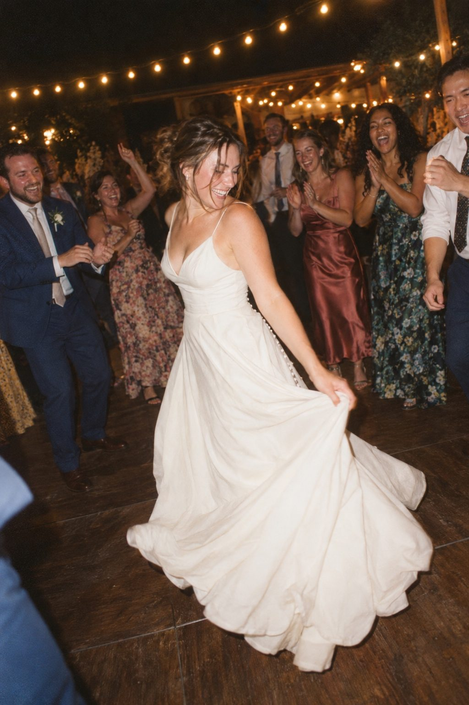
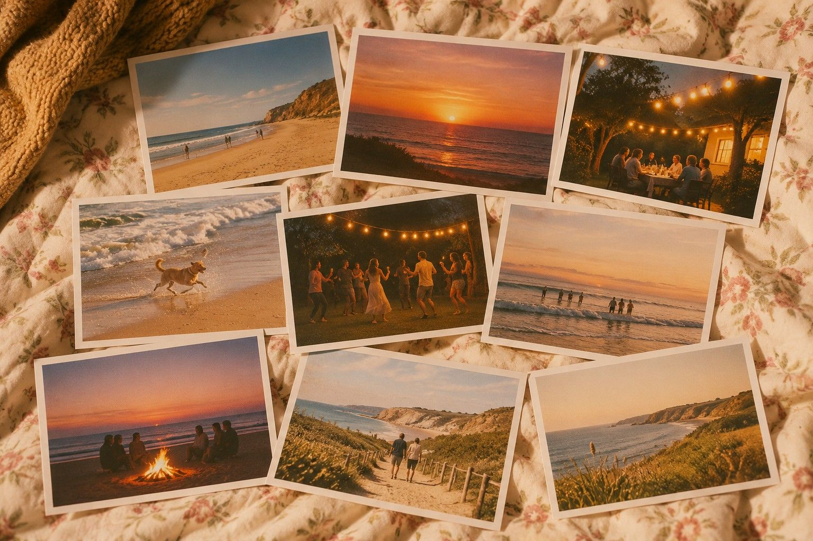
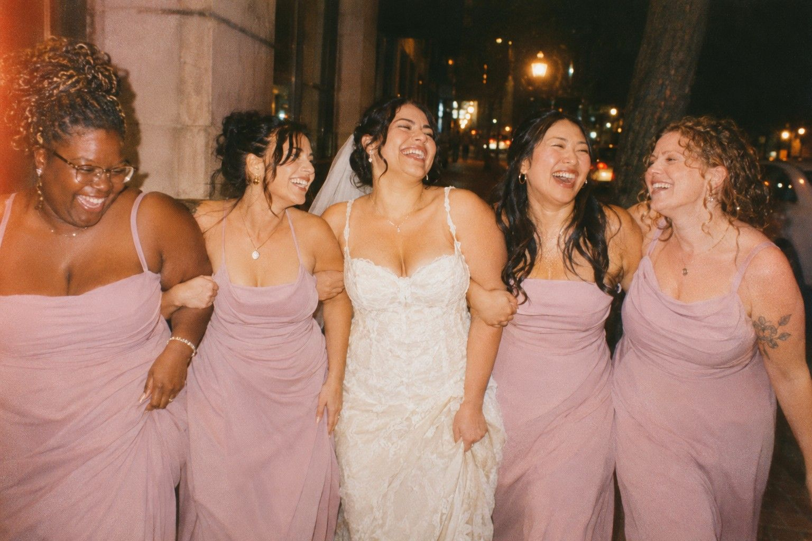
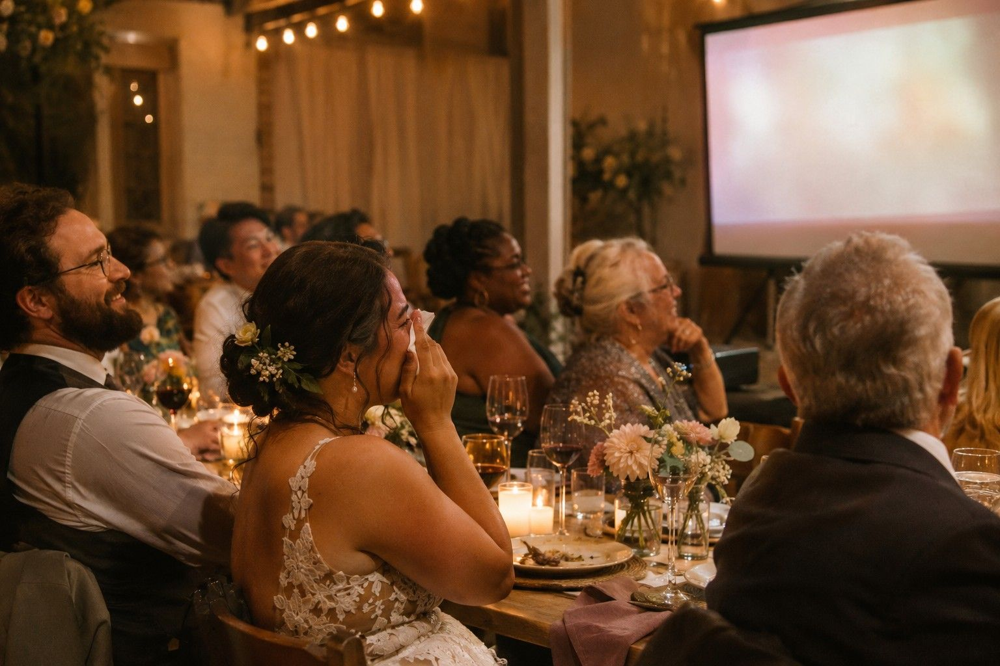
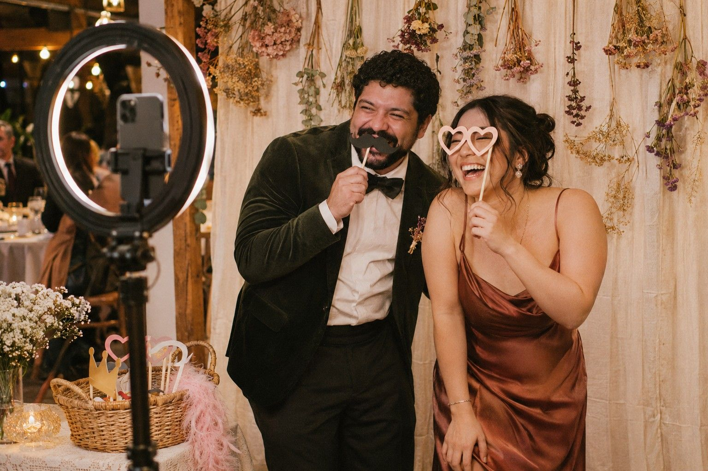
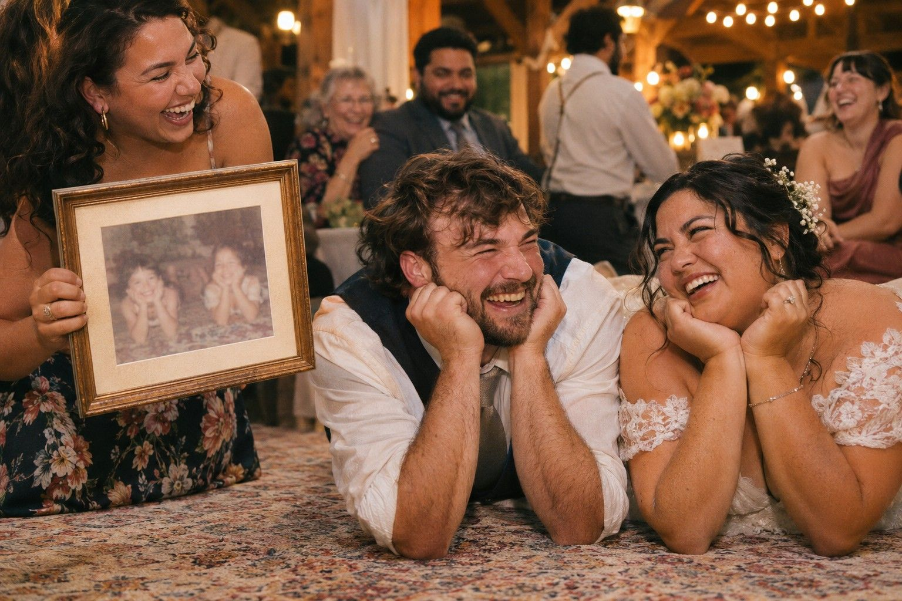
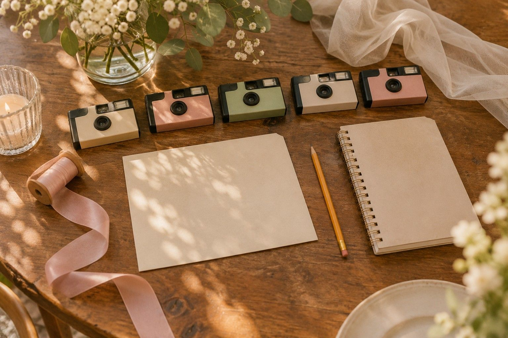
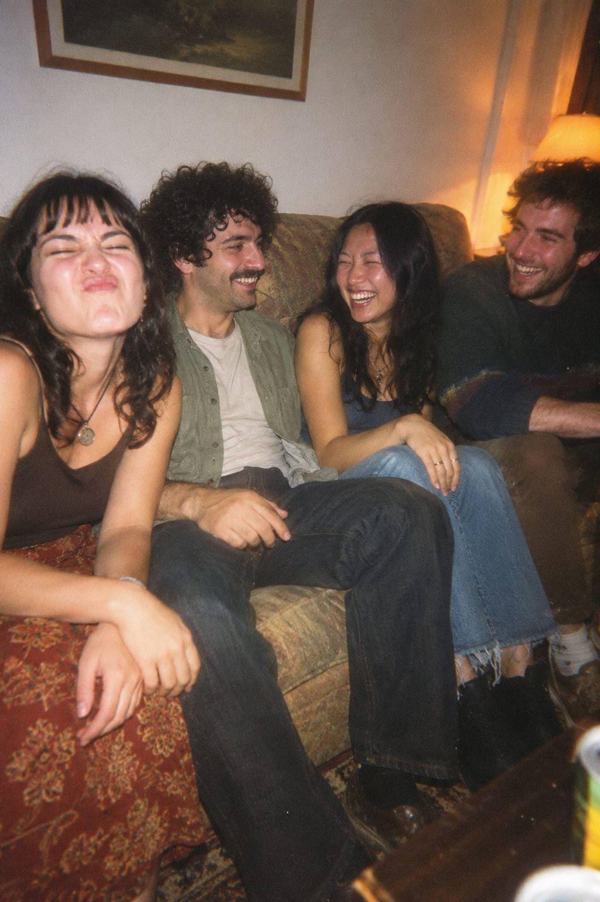
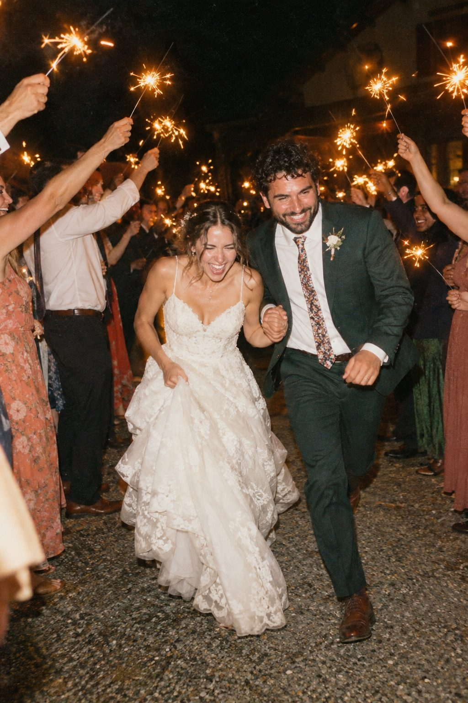

How to Collect Photos From Wedding Guests: 9 Ways Compared
QR camera apps, Google Photos, iCloud, Dropbox, WhatsApp, hashtags, disposables, booths and asking after, compared on guest effort, cost, quality and Android support.
Read the story →Practical guides for weddings, parties and trips: collecting everyone's photos, QR codes and signs, slideshows and recap reels, and getting the film look on your phone.




QR camera apps, Google Photos, iCloud, Dropbox, WhatsApp, hashtags, disposables, booths and asking after, compared on guest effort, cost, quality and Android support.
Read the story →
When to host in 2026, a potluck sign-up that prevents five pies and no rolls, a menu for every kind of cook, turkey and wine math, cheap decor and ten games for adults.
Read the story →A step-by-step guide to making a wedding slideshow: scanning prints with your phone, free tools compared with 2026 prices, timing, music rules, export settings and a venue test plan.
Read the story →
Pick where the photos land, make a static code, print it big enough with a quiet zone, test it on iPhone and Android, and avoid the failures that make guests give up.
Read the story →
Twenty cheap backdrops from tinsel walls to a giant gift box, the lighting rules that fix dark booth photos, gear from a free phone setup to a rented booth, and how guests get their strips.
Read the story →
100 wedding slideshow songs sorted by chapter and checked against Apple Music, with pacing notes, a songs-per-minute table and how to post without getting muted.
Read the story →
Eight at-home themes with honest cost and effort, a run-of-show from 8 p.m. to 1 a.m., food in waves, champagne math, games, a DIY balloon drop and a plan for getting everyone home.
Read the story →A decision guide to iCloud shared albums, Google Photos, AirDrop, Quick Share, WhatsApp HD, Dropbox and event camera apps: what works on iPhone and Android, and what keeps full quality.
Read the story →
What disposable cameras at a wedding really cost per usable photo, why reception shots come back dark, and when a mix of film and a shared phone camera wins.
Read the story →
150 original photo dump captions by occasion, from weekend, monthly and party dumps to wedding guest, holiday and film-camera lines, plus fill-in formulas and how to order your slides.
Read the story →
White elephant variants, team trivia, heads or tails for 200 people, Jackbox over a video call and a shared camera challenge: 30 games with office-safe rules.
Read the story →
Seventy-five specific prompts from cocktail hour to the last dance, a printable 10-prompt card, prizes that cost almost nothing, and a simple way to get every photo back.
Read the story →
Ten recap formats, the shots to grab during the event, how to cut to the beat, which music is safe to post and the 9:16 export settings for Reels, TikTok and Shorts.
Read the story →
Forty-five sign wordings grouped by tone, from classic to rhyming to bilingual, plus QR code sizes, placement and a sign count for 50 to 250 guests.
Read the story →
Forty shots from arrival to the drive home, group-photo tricks that include the photographer, a copy-and-paste photo challenge, and what disposable cameras really cost.
Read the story →
Shoot with a live film look, start from Photographic Styles or a free preset, or edit by hand. Each route, what’s free in November 2026, and the slider values to start from.
Read the story →Google Photos, iCloud, Drive, Dropbox, WhatsApp, free app tiers and asking after: the real storage limits, account rules and catches, plus a pick-by-guest-count table.
Read the story →
A sit-down wedding slideshow should run 5 to 8 minutes. Here is the math: photos per minute and per song, timing per photo, and how to cut 400 photos down to 80.
Read the story →
Instant-camera books, audio phones, puzzle pieces, globes, advice jars and 20 more wedding guest book alternatives, with rough costs, effort and a pick-by-personality table.
Read the story →
Decade by decade, then and now, A to Z: slideshow structures that hold a room, plus songs by mood, photo counts by length and how to collect photos without spoiling a surprise.
Read the story →
Exact wording for the wedding website, invitation insert, table cards, a 20-second DJ script, the morning-after text and one follow-up, with timing and etiquette rules.
Read the story →
Rent, build or run a phone booth? Real 2026 costs, a priced DIY gear list, 20 backdrop and prop ideas, lighting rules, and how guests get their strips.
Read the story →
Albums made or upgraded on iOS 27 let Android and Windows guests join on the web. Here are Apple’s official limits, temporary albums, the fixes that work, and when to use something else.
Read the story →
Twenty wedding slideshow ideas with why each works and how to do it, from then-and-now pairs to voice notes and a guest-made brunch slideshow, plus what to leave out.
Read the story →
Camera counts for 50 to 250 guests, what each setup costs with developing, how many photos to expect, and the logistics that get every camera back.
Read the story →A 35-shot list from arrivals to the after-party, the cake from three angles, how to light a dim room, DIY photo booth and display ideas, and how to collect everyone’s photos.
Read the story →Step-by-step setup, the built-in QR code, the Google Account catch, storage and quality, the 20,000-item limit, downloading everything, and fixes for missing photos.
Read the story →
Last-name puns, merged names, dates and destinations: 70 wedding hashtag examples, a checklist to test yours, and what hashtags miss in 2026 (private accounts, stories).
Read the story →
What actually makes the disposable look, from flash falloff to the date-stamp myth, plus live filter apps, a free editing recipe and the shooting habits that sell it.
Read the story →Thirty reception games and activities sorted by cocktail hour, dinner, after the toasts and late night, each with setup time, rough cost and a tip, plus a sample timeline.
Read the story →A step-by-step plan for the everyone photo, generational shots, a printable scavenger hunt, booth ideas, and how to collect photos from relatives on iPhone and Android.
Read the story →
Plan the day-after brunch: who hosts and pays, who to invite, timing, menus at three budgets, honest hangover drinks, invite wording and a two-hour run of show with a photo reveal.
Read the story →
Screenless cameras, apps that make photos wait to develop, and QR event cameras all use the same name. What each one costs, how it works, and who it suits.
Read the story →
A 30-photo shot list from the dessert table to the generations portrait, 10 backdrop ideas, displays of the couple through the years, daylight tips and how to gather every guest’s photos.
Read the story →
When Night mode beats the flash, how to shoot a dark dance floor and a group in dim light, and the wedding-guest rules that keep your photos welcome.
Read the story →What defines the early-2000s compact camera look, what used digicams cost in November 2026 and what to check before buying, plus an app option and an iPhone editing recipe.
Read the story →
Filmsera, Once, POV, Lense, Scene, Dazz — what actually matters for a wedding: guest join, prices, looks, reveal, and recap.
Read the story →Party flash, dance-floor grit, or soft home-movie grain — match the Look to the night before you Host the Film.
Read the story →Create the Film, pick a Look, print the join code, and let Guests fill the roll until Reveal.
Read the story →
A digital sensor records light perfectly. Film never did — and that imperfection is exactly what your eye reads as warmth, depth, and memory.
Read the story →
Halation is the red bloom around a bright window. Grain is silver clumping in the dark. Here's where each one comes from — and how to use them on purpose.
Read the story →
When you can review every frame, you stop being present. Removing the screen isn't a gimmick — it gives the evening back to the people in it.
Read the story →The photographer gets the aisle. Your friends get everything else — the back-table laughter, the dance-floor chaos. A shared film gathers it all into one roll.
Read the story →
Name it, pick a look, set the reveal, share one link. A walkthrough of every choice the setup screen asks you to make — and the ones worth slowing down for.
Read the story →
Disposable for a party, Super 8 for golden hour, instant for portraits. A practical map of the looks, grouped by the moment they were built to flatter.
Read the story →
A Recap isn't a slideshow of everything — it's an edit. How to choose the frames, pick a pace, and let a roll become something people actually rewatch.
Read the story →
Three hundred unsorted photos, compressed by the group chat, half of them screenshots. Here's why the usual methods fail and what to do instead.
Read the story →
Disposables were supposed to be a relic. Instead they're back at weddings, festivals, and dinner tables — and not only for the look.
Read the story →
Golden hour flatters skin and casts long shadows. Blue hour turns a city electric. A practical guide to reading — and using — the light at the edges of the day.
Read the story →Reveal too soon and it's just a camera. Reveal too late and the moment cools. How to match the wait to the occasion, from a house party to a honeymoon.
Read the story →It isn't nostalgia for them — it's novelty. A look at why the most digital generation ever went looking for friction, limits, and the wait.
Read the story →
The shared disposable is the easiest party game you'll ever run and the one people talk about for weeks. Here's how to set it up so it actually lands.
Read the story →
There's a reason a developed roll hits harder than a camera roll. A short tour through what waiting does to attention, dopamine, and the way we hold a moment.
Read the story →Who can see your film, what happens before the reveal, and why your photos aren't training anything. The plain-language version of how we handle your roll.
Read the story →
Why Portra whispers and Velvia shouts. How shadows, highlights, and skin tones reveal a stock's character — and how to pick the one that fits your scene.
Read the story →
The best trip photos are the ones your friends took of you. A shared film turns six fractured camera rolls into one story you all actually keep.
Read the story →You only ever see a moment from where you stood. A shared roll hands you the angles you missed — including the ones you're in.
Read the story →
Fujifilm called it the Utsurun-Desu — 'it takes pictures.' Forty years later the disposable is a wedding fixture and a TikTok genre. The story of how.
Read the story →A shared film is better with a small constraint. Ten prompts — from 'someone's hands' to 'the last song' — that turn a random roll into a collection.
Read the story →
When every shot is free, none of them matter. Capping the roll forces the one decision that actually improves a photo: whether to take it at all.
Read the story →
A good film invitation sets the tone before anyone takes a photo. What to say, what to leave a mystery, and why the countdown does half the work.
Read the story →
The instant preview was a miracle that quietly cost us something: the shoebox, the surprise, the single frame you couldn't redo. An honest accounting.
Read the story →Digital didn't kill film and film won't kill digital. They answer different questions. A clear-eyed look at what each is genuinely better at.
Read the story →The reveal shouldn't be the end of the roll. A practical guide to prints, sizes, paper, and the small ritual of putting a night on paper.
Read the story →One shared camera for the whole party. Guests join by QR code, every photo stays hidden until the reveal, then the roll opens for everyone at once.
Download on the App Store